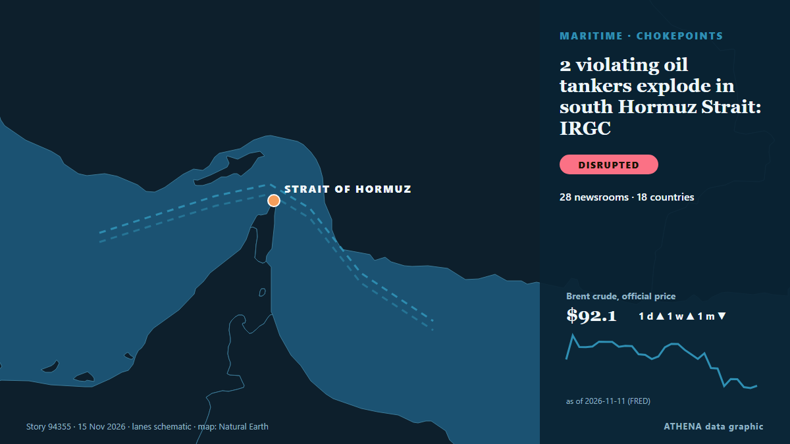

Ναυτιλία & λιμάνια
ΧορηγούμενοΠαρουσιάζεται από  Cybernetics and Artificial Intelligence Lab Welcome to the Cybernetics and Artificial Intelligence Laboratory, established at the Department of Business Administration of the National and Kapodistrian University of Athens. The lab is headed by Professor Dimitrios Thomakos. The lab aims to do research that can be published in top venues. Our research uses tools and methods of Artificial Intelligence, and lies in the following areas: - Forecasting - Decision making - Cyber security - Finance We are always looking forward to collaborating with exceptional students!
Cybernetics and Artificial Intelligence Lab Welcome to the Cybernetics and Artificial Intelligence Laboratory, established at the Department of Business Administration of the National and Kapodistrian University of Athens. The lab is headed by Professor Dimitrios Thomakos. The lab aims to do research that can be published in top venues. Our research uses tools and methods of Artificial Intelligence, and lies in the following areas: - Forecasting - Decision making - Cyber security - Finance We are always looking forward to collaborating with exceptional students!
| 2 Νοε | 0 |
|---|---|
| 3 Νοε | 0 |
| 4 Νοε | 0 |
| 5 Νοε | 1 |
| 6 Νοε | 0 |
| 7 Νοε | 2 |
| 8 Νοε | 0 |
| 9 Νοε | 1 |
| 10 Νοε | 1 |
| 11 Νοε | 4 |
| 12 Νοε | 9 |
| 13 Νοε | 3 |
| 14 Νοε | 1 |
| 15 Νοε | 0 |
Οι τίτλοι των ειδήσεων παρουσιάζονται στα αγγλικά, όπως δημοσιεύτηκαν.

2 violating oil tankers explode in south Hormuz Strait: IRGC
"One of the vessels is a supertanker; it is currently engulfed in flames following a powerful explosion," the Iranian Revolutionary Guard Corps (IRGC) Navy spokesperson said. από The Jerusalem Post
Security Council Hears Competing Gulf, Iranian Narratives on Maritime Insecurity
Amid ongoing tensions in the Middle East, the Security Council today met at Bahrain’s request to discuss threats to maritime security, with Gulf States blaming Iran and its Houthi allies for attacks… από UN Meetings Coverage and Press Releases
HHLA container handling falls 7.3% in January-September 2026
Hamburg, Germany (Ports Europe) November 13, 2026 – HHLA’s container throughput fell 7.3% to 4.45 million TEU in January-September 2026, as terminal automation and a strike disrupted operations in… από Ports Europe
Evergreen Line Resumes Suez Canal Transits with Ever Eon's Maiden Voyage
Evergreen Line returns to the Suez Canal, marking a significant shift in container shipping as Ever Eon completes its first transit. από SeaNews Türkiye
Dubai ranks 12th among world’s leading maritime cities as Abu Dhabi climbs to 15th
Dubai ranks 12th globally and Abu Dhabi rises to 15th in the 2026 Leading Maritime Cities report, with Dubai also fifth worldwide for maritime resilience. από Arabian Business
Port of Los Angeles Handles Over 1 Million TEUs in October
The Port of Los Angeles handled 1,026,872 Twenty-Foot Equivalent Units (TEUs) in October, setting a record for the month and ranking as the second-highest monthly… από Maritime Professional
Andhra Pradesh Aims To Become India’s Eastern Maritime Gateway With 4 New Ports
The summit brings together government leaders, industry representatives and international participants to explore opportunities in trade, investment, technology and global partnerships. από Marine Insight
Oil tanker struck off UAE's Ras Al-Khaimah, all crew reported safe
Nov 12 - A vessel was hit by an unidentified projectile about 14 nautical miles northwest of the UAE emirate of Ras Al-Khaimah on Wednesday, causing a fire in its engine room, British maritime… από The Straits Times
Maran Tankers takes delivery of newbuild dual-fuel tanker Maran Myron
Maran Tankers Management, part of the Angelicoussis Group, led by Maria Angelicoussis, has announced the delivery of its newbuild tanker *Maran Myron*. από Naftemporiki (English)
Police foil attempt to smuggle over 9kg of syabu worth RM476,180 to Indonesia via Port Dickson jetty
SEREMBAN, Nov 13 — Negeri Sembilan police foiled an attempt to smuggle 9.238 kilogrammes (kg) of drugs believed to... από Malay Mail
ATI Secures Manila South Harbour Concession Renewal To 2063
Renewal provides long-term certainty for ATI to advance investment in port modernisation, innovation and sustainable infrastructure MANILA, PHILIPPINES – Media OutReach Newswire – 12 November 2026… από Laotian Times
Monjasa adds five sister tankers in major fleet renewal deal
Global oil and shipping group, Monjasa is adding five sister tankers to its fleet in the company’s largest-ever tonnage acquisition,. από Cyprus Shipping News
Shipping puts AI readiness to the test with new maturity benchmark
Lloyd’s Register has expanded its Digital Maturity Index benchmarking tool with a new AI maturity assessment, helping shipowners and operators evaluate. από Cyprus Shipping News
Auramarine to provide methanol fuel supply systems for hydrographic research vessels
Finland’s Auramarine has announced it has signed an agreement with Spain-based Astilleros Gondán S.A. από Bunkerspot
Iran says 3 tankers caught fire in Hormuz
The Revolutionary Guards did not specify the names or nationality of the tankers. από Free Malaysia Today
Tanker carrying 6 Indian seafarers struck in Arabian Gulf, one injured: Minister
[Editor's Note: Follow Khaleej Times live blog for the latest regional developments since the US-Iran war started on February 28] A Liberia-flagged tanker carrying six Indian seafarers was hit by a… από Khaleej Times (working feed)
Panama Canal increases daily transit capacity to 34 slots
The Panama Canal has increased its daily transit capacity to 34 booking slots and raised the maximum allowable draft for vessels using the Neopanamax locks. από Container News
Xiamen Port launches green methanol bunkering with OOCL WISDOM
Xiamen Port in China has completed its first ship-to-ship green methanol bunkering operation, supplying 1,005 tonnes of the alternative marine fuel to OOCL WISDOM, one of the world’s largest methanol… από Container News
IMO Secretary-General calls on States to enforce maritime rules in the Strait of Hormuz
Secretary-General urges concrete measures to ensure compliance with international maritime regulations The Secretary-General of the International Maritime Organization (IMO) Mr. από Cyprus Shipping News